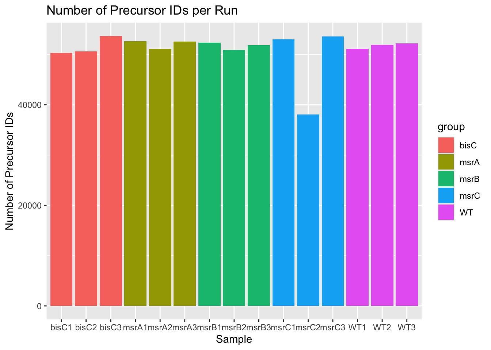
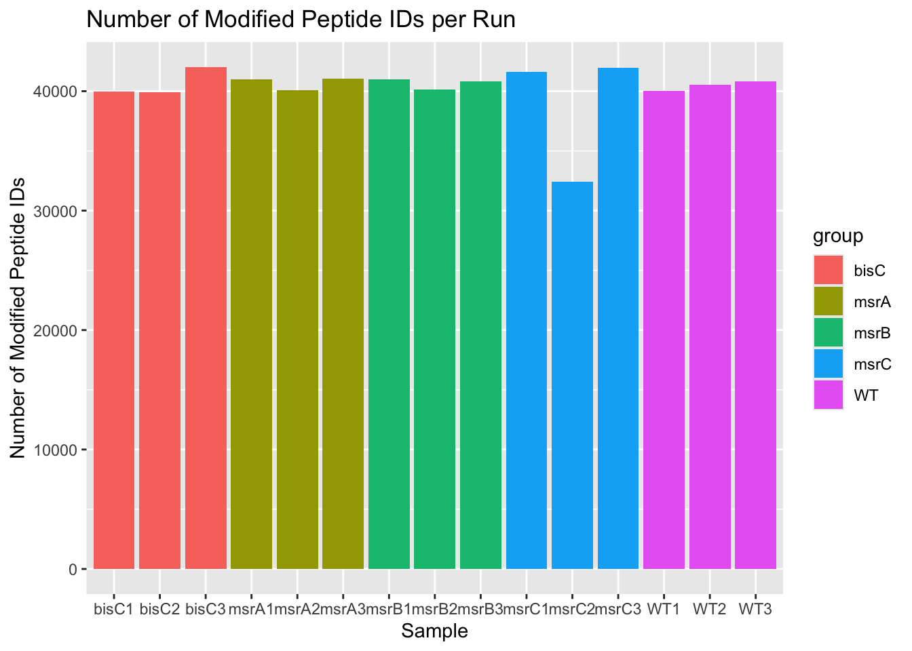
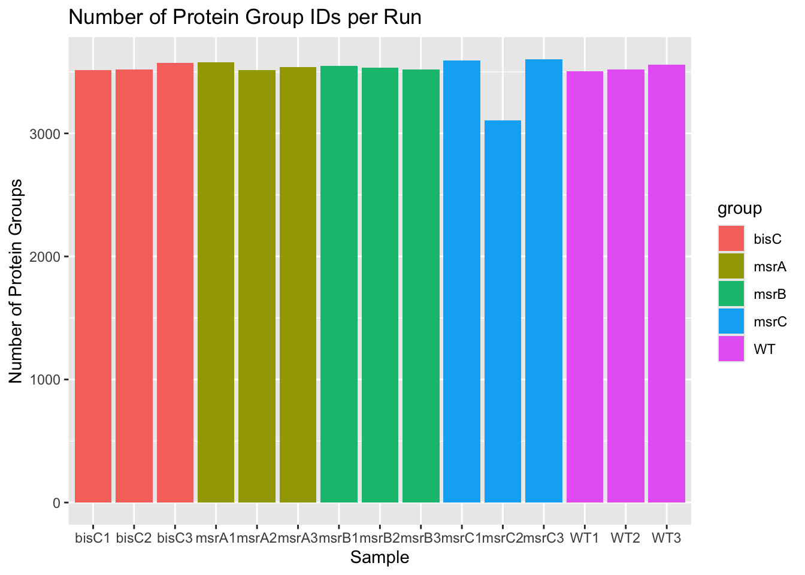
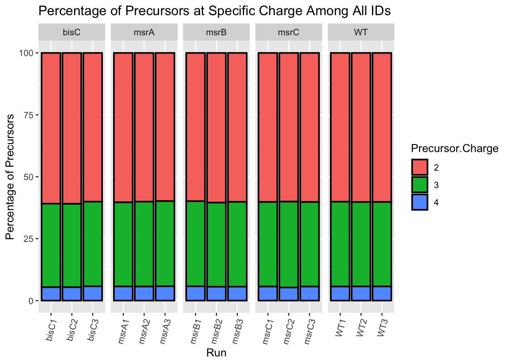
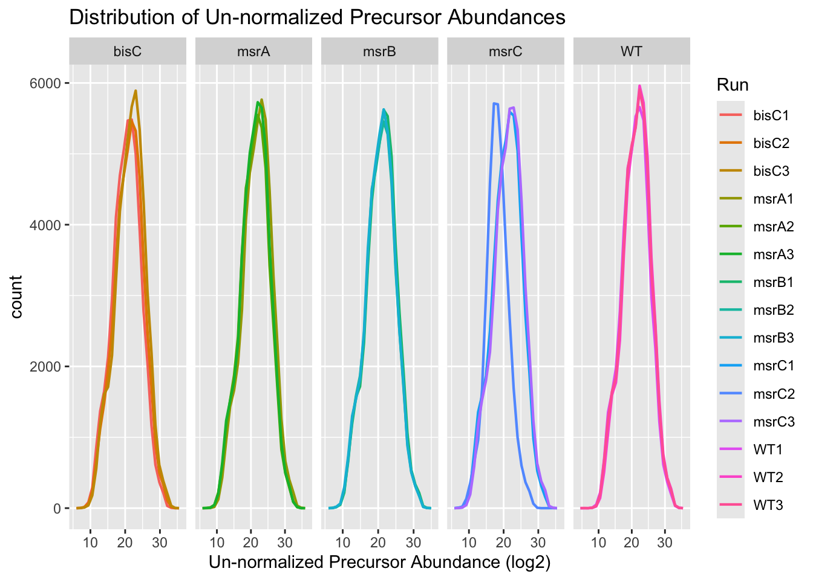
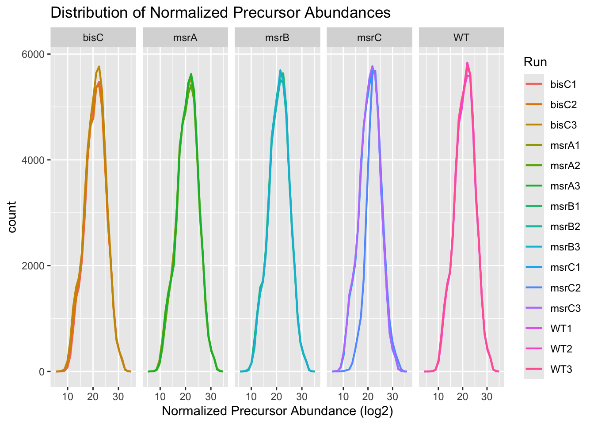
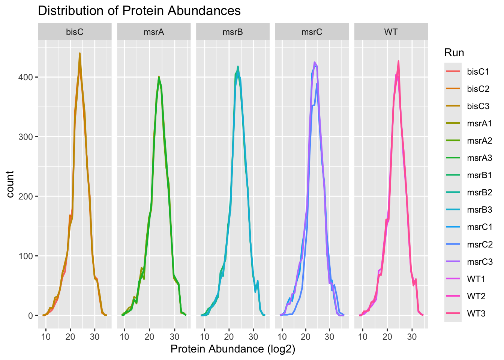
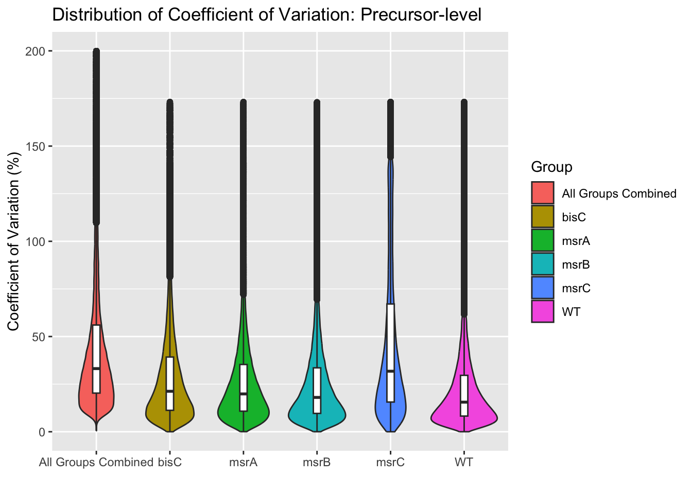
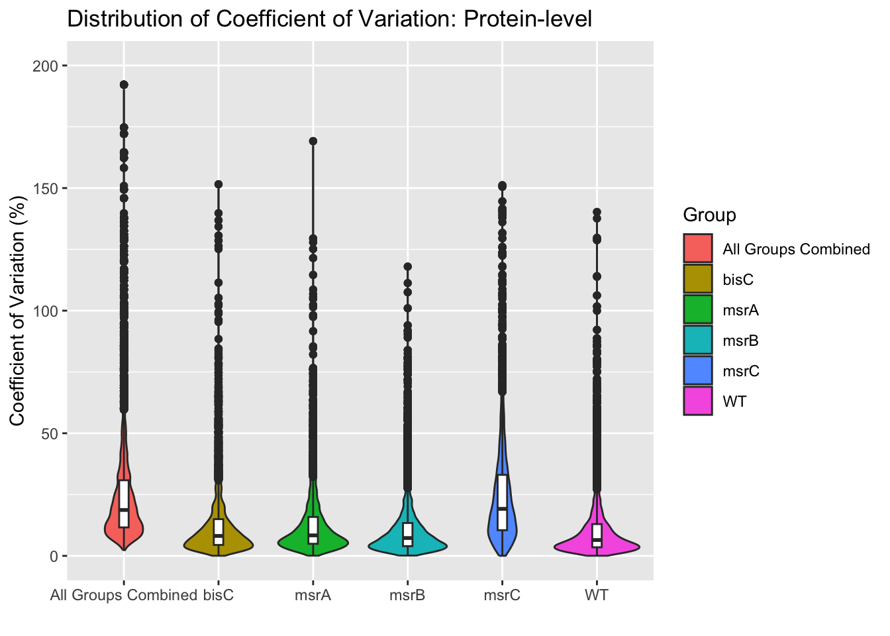
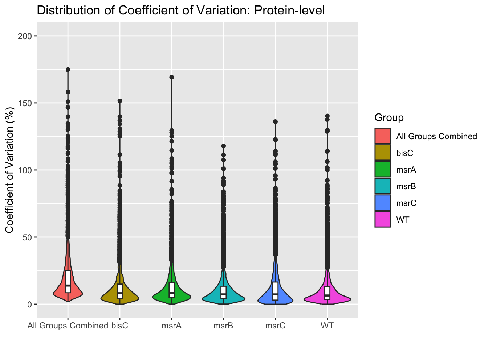

3.4 Evaluate DIA-NN Results
Let’s look at the data in this file. To do so, we’ll use head() to look at the first five rows of the data frame.
## # A tibble: 6 × 71
## Run.Index Run Channel Precursor.Id Modified.Sequence Stripped.Sequence
## <int> <chr> <chr> <chr> <chr> <chr>
## 1 0 Ahmed_WT3_… "" AAAAEIAVK2 AAAAEIAVK AAAAEIAVK
## 2 1 Ahmed_bisC… "" AAAAEIAVK2 AAAAEIAVK AAAAEIAVK
## 3 2 Ahmed_bisC… "" AAAAEIAVK2 AAAAEIAVK AAAAEIAVK
## 4 3 Ahmed_bisC… "" AAAAEIAVK2 AAAAEIAVK AAAAEIAVK
## 5 4 Ahmed_msrA… "" AAAAEIAVK2 AAAAEIAVK AAAAEIAVK
## 6 5 Ahmed_msrA… "" AAAAEIAVK2 AAAAEIAVK AAAAEIAVK
## # ℹ 65 more variables: Precursor.Charge <int>, Precursor.Lib.Index <int>,
## # Decoy <int>, Proteotypic <int>, Precursor.Mz <dbl>, Protein.Ids <chr>,
## # Protein.Group <chr>, Protein.Names <chr>, Genes <chr>, RT <dbl>, iRT <dbl>,
## # Predicted.RT <dbl>, Predicted.iRT <dbl>, IM <dbl>, iIM <dbl>,
## # Predicted.IM <dbl>, Predicted.iIM <dbl>, Precursor.Quantity <dbl>,
## # Precursor.Normalised <dbl>, Ms1.Area <dbl>, Ms1.Normalised <dbl>,
## # Ms1.Apex.Area <dbl>, Ms1.Apex.Mz.Delta <dbl>, Normalisation.Factor <dbl>, …3.4.1 Explaining the DIA-NN Report
Each row is a precursor ID (i.e., a charged peptide…remember you can have multiple precursors for a peptide) and each row is data specific to that precursor. A brief description of some of the important rows are below:
Run: the run name the precursor was identified from
Precursor.Id: the amino acid sequence followed by charge state of the precursor. Note that if the precursor is modified, the UniMod number will be here as well
Modified.Sequence: the amino acid sequence of the precursor. Note that is the that if the precursor is modified, the UniMod number will be here as well
- Note: it is possible to have multiple Precursor.Ids for the same Modified.Sequence (e.g., the modified peptide was identified in both the +2 and +3 form)
Stripped.Sequence: the amino acid sequence of the precursor. Note that if the precursor is modified, the UniMod number will NOT be here.
- Note: it is possible to have multiple Modified.Sequences for the same Stripped.Sequence (e.g., the peptide was identified in both the modified and un-modified form)
Precursor.Charge: the charge state of the precursor
Proteotypic: the precursor sequence matches to a single protein in the FASTA file. (1 = TRUE, 0 = FALSE)
Precursor.mz: the m/z of the identified precursor
Protein.Ids: The UniProt accession number(s) of all possible proteins the precursor matched to (i.e., every protein this precursor could have come from)
Protein.Group: DIA-NN’s best attempt at resolving which minimal set of proteins can explain the identified precursor (i.e., what DIA-NN thinks the precursor most likely came from)
Genes: The name of the gene that produces the “Protein.Group”
RT: The retention time, in minutes, of the apex for the precursor
IM: The ion mobility (if the instrument has it) of the precursor
Precursor.Quantity: The un-normalized abundance of the precursor
Precursor.Normalised: The normalized abundance of the precursor. Note that if normalization is disabled. the column ios simply the same value as “Precursor.Quantity”
Quantity.Quality: The quality of the precursor quantification (higher value = higher confidence)
RT.Start: The retention time, in minutes, of the first scan the precursor was detected
RT.Stop: The retention time, in minutes, of the last scan the precursor was detected
FWHM: The “Full-width, half-maximum” of the precursor, in minutes. This gives a measurement for how wide the precursor extracted ion chromatogram (XIC)
PG.MaxLFQ: The abundance of the entire protein group that precursor matched to. This is calculated by using “MaxLFQ”, which tries to use all the possible precursor abundances across all the runs to find the most representative abundance that describes that protein group’s abundance for each sample.
- Note: this value will be the same for all precursors that match to the same protein group within each sample
PG.MaxLFQ.Quality: The quality of the MaxLFQ quantification (high value = higher confidence)
Q.Value: The confidence that the precursor identification within each run was a true identification (lower value = higher confidence)
PEP: “Posterior Error Probability” (lower value = higher confidence)
Global.Q.Value: The confidence that the precursor identification across all runs in the experiment was a true identification (lower value = higher confidence)
Lib.Q.Value: The confidence that the precursor identification was matched to a precursor from the spectral library (lower value = higher confidence)
- Note: this only populate if MBR was enabled
PG.Q.Value: The confidence that the protein group identification within each run was a true identification (lower value = higher confidence)
Global.PG.Q.Value: The confidence that the protein group identification across all runs in the experiment was a true identification (lower value = higher confidence)
Lib.PG.Q.Value: The confidence that the protein group identification was matched to a protein group from the spectral library (lower value = higher confidence)
- Note: this only populate if MBR was enabled
Best.Fr.Mz: The m/z of the best fragment ion for this precursor. This isn’t always used, but will be necessary if you wish to use
MSStats
3.4.2 Evaluating the Quality of the Runs
Using some of the columns mentioned above, we are going to look at the quality of each of the precursors, and filter to only retain high quality IDs, and then re-check those same metrics.
But first, we’re going to modify the diann_results data frame slightly:
We will rename each
Runso that we remove any common strings (“Ahmed_” and “_25-023”). This will make visualization slightly easierWe will remove any unwanted columns so that we only have the ones mentioned above. The makes the data frame considerably smaller, making each subsequent step just a bit faster
We will also be adding an extra column denoting the group of each sample. This will make it slightly easier to comprehend the graphs later on
diann_results <- diann_results %>%
select(c(Run, Precursor.Id:Precursor.Charge, Proteotypic:Protein.Group,
Genes:RT, Precursor.Quantity, Precursor.Normalised, Quantity.Quality,
RT.Stop:FWHM, PG.MaxLFQ, PG.MaxLFQ.Quality, Q.Value:Lib.Q.Value,
PG.Q.Value, Global.PG.Q.Value, Lib.PG.Q.Value)) %>%
mutate(Run = gsub('Ahmed_', '', Run),
Run = gsub('_25-023', '', Run)) %>%
# We are going to add "metadata" to our runs, which includes information such as the group that sample belongs to, the replicate, etc. We can make this beforehand, or simply make a new tibble that contains all the information, which we're doing here. So we will be making a new tibble where one column is all of the run names in our experiment ("Runs") and then another column that has the genotype of that samples ("group")
left_join(y = tibble(Run = c( 'bisC1', 'bisC2', 'bisC3',
'msrA1', 'msrA2', 'msrA3',
'msrB1', 'msrB2', 'msrB3',
'msrC1', 'msrC2', 'msrC3',
'WT1', 'WT2', 'WT3'),
group = c(rep('bisC', 3),
rep('msrA', 3),
rep('msrB', 3),
rep('msrC', 3),
rep('WT', 3))),
by = 'Run')3.4.2.1 Proteome Coverage
Now let’s look to see how many precursors, modified peptides, and protein groups were identified in each experiment. Ideally, they should be pretty similar, or at least each biological group should be similar among each other.
First, we will look at the number of precursors identified in each sample. While it would be nice to have all samples have a similar number, sometimes biology gets in the way. At the very least, we should expect each replicate from the same group to have a similar number of IDs. We’ll do this by looking at three different ID “levels”: precursors, peptides, and proteins.
Precursor IDs
diann_results %>%
# We want only the columns "Run", "group", and "Precursor.Id". More specifically, only rows where all three of these columns are unique
distinct(Run,
group,
Precursor.Id) %>%
group_by(Run,
group) %>%
summarise(n_precursor_ids = n(), #counts the number of precursor IDs in each group (run and group)
.groups = 'drop') %>%
# We want to plot the number of unique precursors in each sample, grouping them by genotype
ggplot(mapping = aes(x = Run, # x-axis will be the run
y = n_precursor_ids, # y-axis will be the number of precursor IDs
fill = group)) + # we want each genotype to be a different color
geom_col() + # Draw a bar graph
# Add labels to the plot
labs(x = 'Sample', # x-axis title
y ='Number of Precursor IDs', # y-axis title
title = 'Number of Precursor IDs per Run') #Title of the plot
Peptide IDs
diann_results %>%
distinct(Run,
group,
Modified.Sequence) %>%
group_by(Run,
group) %>%
summarise(n_modified_peptides = n(),
.groups = 'drop') %>%
ggplot(mapping = aes(x = Run,
y = n_modified_peptides,
fill = group)) +
geom_col() +
labs(x = 'Sample',
y ='Number of Modified Peptide IDs',
title = 'Number of Modified Peptide IDs per Run')
Protein IDs
diann_results %>%
distinct(Run,
group,
Stripped.Sequence) %>%
group_by(Run,
group) %>%
summarise(n_peptides = n(),
.groups = 'drop') %>%
ggplot(mapping = aes(x = Run,
y = n_peptides,
fill = group)) +
geom_col() +
labs(x = 'Sample',
y ='Number of Peptide IDs',
title = 'Number of Unique Peptide IDs per Run')diann_results %>%
distinct(Run,
group,
Protein.Group) %>%
group_by(Run,
group) %>%
summarise(n_protein_groups = n(),
.groups = 'drop') %>%
ggplot(mapping = aes(x = Run,
y = n_protein_groups,
fill = group)) +
geom_col() +
labs(x = 'Sample',
y ='Number of Protein Groups',
title = 'Number of Protein Group IDs per Run')
This series of plots show us a few things:
The number of IDs decreases as we go up in “biological level” (i.e., precursor -> modified peptide -> stripped peptide -> protein). This inherently makes sense since multiple precursors can be produced from a single modified peptide, if there is a variable modification site, a peptide can exist as both modified and unmodified, and lastly multiple peptides can be produced from a single protein
There seems to be one run, msrC2, that is an outlier in terms of IDs as compared to the rest of the runs, especially the rest of the runs from the group.
However, based just off the total number of IDs, we can’t tell if we should remove this run or not from our analysis. Let’s look at some other metrics, specifically:
Charge state distribution
Intensity distribution
CV distribution at each “biological level” (precursor, peptide, protein group)
3.4.2.2 Charge State Distribution
diann_results %>%
select(Run,
group,
Precursor.Id,
Precursor.Charge) %>%
count(Run,
group,
Precursor.Charge) %>%
group_by(Run, group) %>%
mutate(total_precursors = sum(n)) %>%
group_by(Run, group, Precursor.Charge) %>%
reframe(charge_per = n/total_precursors * 100) %>%
mutate(Precursor.Charge := fct_inorder(factor(Precursor.Charge)),
Run := factor(Run,
levels = unique(str_sort(Run, numeric = T)))) %>%
ggplot(aes(x = Run,
y = charge_per,
fill = Precursor.Charge)) +
geom_col(color = 'black',
linewidth = 0.75) +
facet_grid(cols = vars(group),
scales = 'free') +
labs(y = 'Percentage of Precursors',
title = 'Percentage of Precursors at Specific Charge Among All IDs') +
theme(axis.text.x = element_text(angle = 75, hjust = 1))
All runs follow a similar pattern of charge distribution, indicating ionization was consistent across the experiment
Intensity Distribution
Un-normalized Intensity
diann_results %>%
select(Run,
group,
Precursor.Id,
Precursor.Quantity) %>%
filter(Precursor.Quantity > 0) %>%
mutate(Precursor.Quantity = log2(Precursor.Quantity)) %>%
ggplot(aes(x = Precursor.Quantity,
color = Run)) +
geom_freqpoly(linewidth = 0.75,
bins = 25) +
facet_grid(cols = vars(group),
scales = 'free') +
labs(x = 'Un-normalized Precursor Abundance (log2)',
title = 'Distribution of Un-normalized Precursor Abundances') 
It would appear that the msrC2 sample might have had lower coverage due to a decrease in the total amount of peptide loaded onto the HPLC column, which would in turn lead to a decrease in overall abundances. Luckily, normalization can sometimes make up for differences like these. Let’s look to see if DIA-NN normalization helped.
3.4.2.2.1 Normalized Intensity
diann_results %>%
select(Run,
group,
Precursor.Id,
Precursor.Normalised) %>%
filter(Precursor.Normalised > 0) %>%
mutate(Precursor.Normalised = log2(Precursor.Normalised)) %>%
ggplot(aes(x = Precursor.Normalised,
color = Run)) +
geom_freqpoly(linewidth = 0.75,
bins = 25) +
facet_grid(cols = vars(group),
scales = 'free') +
labs(x = 'Normalized Precursor Abundance (log2)',
title = 'Distribution of Normalized Precursor Abundances') 
While the left edge of the curve is narrower, msrC2 now mostly agrees with the rest of the group. This would imply that by using the normalized precursor quantities, we shouldn’t see too much effect from the decreased material loaded in msrC2 on the downstream analyses. Just to be sure, let’s check the protein abudances, which is calculated using the normalized precursor abundances.
diann_results %>%
distinct(Run,
group,
Protein.Group,
PG.MaxLFQ) %>%
filter(PG.MaxLFQ > 0) %>%
mutate(PG.MaxLFQ = log2(PG.MaxLFQ)) %>%
ggplot(aes(x = PG.MaxLFQ,
color = Run)) +
geom_freqpoly(linewidth = 0.75,
bins = 25) +
facet_grid(cols = vars(group),
scales = 'free') +
labs(x = 'Protein Abundance (log2)',
title = 'Distribution of Protein Abundances') 
Once “wrapping up” to the protein level, any differences in abundances is now even smaller. Therefore, we can be a little more confident that we can use all our data in downstream analyses. But just to be sure, we’re going to look at one more metric.
CV Distribution
We are also going to measure the coefficient of variation (CV, standard deviation divided by the mean) across each “biological level” to see if there are any groups what have inconsistent quantification across all reps of that group.
We will also be measuring the CV across all 15 samples, regardless of biological group. This is a good sanity check to always perform; if your experiment was properly designed, the CV between replicates within the same group should be lower than the CV between all the samples.
Precursor Level
diann_results %>%
distinct(Precursor.Id,
Run,
group,
Precursor.Normalised) %>%
filter(Precursor.Normalised > 0) %>%
group_by(Precursor.Id) %>%
mutate(cv_combined = sd(Precursor.Normalised,
na.rm = T)/mean(Precursor.Normalised,
na.rm = T) * 100) %>%
ungroup() %>%
group_by(group,
Precursor.Id) %>%
mutate(cv = sd(Precursor.Normalised,
na.rm = T)/mean(Precursor.Normalised,
na.rm = T) * 100) %>%
ungroup() %>%
distinct(group,
Precursor.Normalised,
cv_combined,
cv) %>%
drop_na() %>%
pivot_longer(cols = starts_with('cv'),
names_to = 'type',
values_to = 'cv') %>%
mutate(type = ifelse(type == 'cv',
group,
'All Groups Combined')) %>%
mutate(type = fct_relevel(as.factor(type),
'All Groups Combined')) %>%
ggplot(aes(x = type,
y = cv)) +
geom_violin(aes(fill = type),
na.rm = T) +
geom_boxplot(na.rm = T,
width = 0.1) +
labs(title = 'Distribution of Coefficient of Variation: Precursor-level',
x = '',
y = 'Coefficient of Variation (%)',
fill = 'Group') +
scale_y_continuous(limits = c(0, 200))
For all groups, the CV of the normalized precursors are all below the intra-group CV, including the msrC group, which had the one outlier. However, based on our earlier graphs, we should expect the CV of that group to decrease as we “go up” in biological level to the protein level.
Protein Level
diann_results %>%
distinct(Protein.Group,
Run,
group,
PG.MaxLFQ) %>%
filter(PG.MaxLFQ > 0) %>%
group_by(Protein.Group) %>%
mutate(cv_combined = sd(PG.MaxLFQ,
na.rm = T)/mean(PG.MaxLFQ,
na.rm = T) * 100) %>%
ungroup() %>%
group_by(group,
Protein.Group) %>%
mutate(cv = sd(PG.MaxLFQ,
na.rm = T)/mean(PG.MaxLFQ,
na.rm = T) * 100) %>%
ungroup() %>%
distinct(group,
PG.MaxLFQ,
cv_combined,
cv) %>%
drop_na() %>%
pivot_longer(cols = starts_with('cv'),
names_to = 'type',
values_to = 'cv') %>%
mutate(type = ifelse(type == 'cv',
group,
'All Groups Combined')) %>%
mutate(type = fct_relevel(as.factor(type),
'All Groups Combined')) %>%
ggplot(aes(x = type,
y = cv)) +
geom_violin(aes(fill = type),
na.rm = T) +
geom_boxplot(na.rm = T,
width = 0.1) +
labs(title = 'Distribution of Coefficient of Variation: Protein-level',
x = '',
y = 'Coefficient of Variation (%)',
fill = 'Group') +
scale_y_continuous(limits = c(0, 200))
While the CV of the msrC group did go down, so did the intra-group CV. So much so that it is now lower than the msrC CV. This means that the msrC group has too much variability to reliably compare to other groups.
However, we know that one run in particular is causing this variability. So what would have if we were to remove that run (msrC2)?
diann_results %>%
distinct(Protein.Group,
Run,
group,
PG.MaxLFQ) %>%
filter(Run != 'msrC2') %>%
filter(PG.MaxLFQ > 0) %>%
group_by(Protein.Group) %>%
mutate(cv_combined = sd(PG.MaxLFQ,
na.rm = T)/mean(PG.MaxLFQ,
na.rm = T) * 100) %>%
ungroup() %>%
group_by(group,
Protein.Group) %>%
mutate(cv = sd(PG.MaxLFQ,
na.rm = T)/mean(PG.MaxLFQ,
na.rm = T) * 100) %>%
ungroup() %>%
distinct(group,
PG.MaxLFQ,
cv_combined,
cv) %>%
drop_na() %>%
pivot_longer(cols = starts_with('cv'),
names_to = 'type',
values_to = 'cv') %>%
mutate(type = ifelse(type == 'cv',
group,
'All Groups Combined')) %>%
mutate(type = fct_relevel(as.factor(type),
'All Groups Combined')) %>%
ggplot(aes(x = type,
y = cv)) +
geom_violin(aes(fill = type),
na.rm = T) +
geom_boxplot(na.rm = T,
width = 0.1) +
labs(title = 'Distribution of Coefficient of Variation: Protein-level',
x = '',
y = 'Coefficient of Variation (%)',
fill = 'Group') +
scale_y_continuous(limits = c(0, 200))
Our msrC group now has really low CVs, similar to the other runs. Therefore in downstream analyses, we have to remember to remove that run before doing anything else.